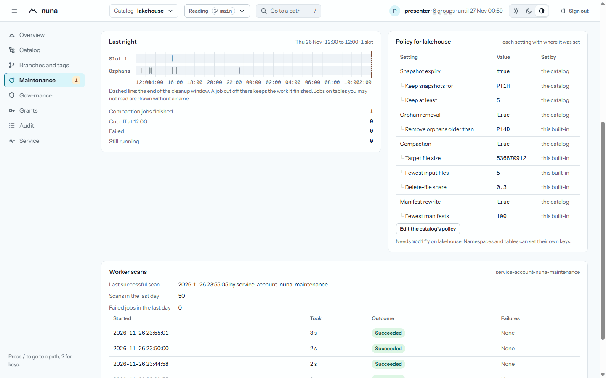

Set a catalog's maintenance policy
Choose what the maintenance worker does to tables on its own: snapshot expiry, orphan removal, compaction and manifest rewrite, set on a catalog and overridden key by key below it.
A maintenance policy is a set of keys. It may be set on a catalog, a namespace, a table or a view; each level sets only the keys it names and inherits the rest from the level above, then from the deployment's defaults (nuna.governance.maintenance-defaults), then from the built-in values. Built in, nothing runs: every enabled key is false. Guardrails then have the last word.
Before you begin
- Your groups hold
modifyon the level you set the policy on. Reading a policy needsdescribe. - The maintenance worker runs for the catalog (Install the maintenance worker). It reads the policy at its next scan.
- For the curl examples,
NUNAandTOKENare set as Use the APIs with curl describes.
Set the catalog's policy
-
Select Maintenance in the rail.
The panel Policy for trading lists each key with its Value and who Set by: the catalog, a guardrail or the built-in value.
-
Select Edit the catalog's policy.
The dialog Policy for trading has one field per key. A field you leave empty leaves that key to the built-in value.
-
Enter the values and select Save the policy.
The answer reads Saved the policy for trading. Emptying every field removes the catalog's policy.
The console edits the catalog's policy only. A table's Maintenance tab shows Policy for this table, each key with where it was set; set a namespace's or table's own keys with the API.

curl -sS -X PUT "$NUNA/management/v1/catalogs/trading/maintenance-policy" \
-H "Authorization: Bearer $TOKEN" \
-H "Content-Type: application/json" \
-d '{"snapshot-expiry.enabled": "true", "snapshot-expiry.max-snapshot-age": "P7D",
"orphan-removal.enabled": "true", "compaction.enabled": "true"}'The body replaces the level's own keys; keys it leaves out are inherited. The server answers 200 with the stored policy. The same path under a namespace, table or view (…/namespaces/equities/tables/fills/maintenance-policy) sets that level's keys, and DELETE removes a level's policy.
curl -sS "$NUNA/management/v1/catalogs/trading/namespaces/equities/tables/fills/maintenance-policy" \
-H "Authorization: Bearer $TOKEN"{
"target": {"kind": "table", "id": "…"},
"policy": {},
"resolved": {
"snapshot-expiry.enabled": {"value": "true", "source": "catalog:…"},
"snapshot-expiry.max-snapshot-age": {"value": "P7D", "source": "catalog:…"},
"orphan-removal.older-than": {"value": "P14D", "source": "built-in"},
"compaction.target-file-size-bytes": {"value": "536870912", "source": "built-in"}
},
"retention-classes": []
}policy is the level's own keys; resolved is every key in force, with its source: built-in, default (the deployment's), a level's kind and id, or guardrail with a reason.
The policy keys
| Key | In the console | Built in | What it does |
|---|---|---|---|
snapshot-expiry.enabled | Snapshot expiry | false | Expire old snapshots. |
snapshot-expiry.max-snapshot-age | Keep snapshots for | P5D | Snapshots older than this expire. At least the minimum snapshot age. |
snapshot-expiry.min-snapshots-to-keep | Keep at least | 1 | Never expire below this many snapshots. |
orphan-removal.enabled | Orphan removal | false | Remove files in the table's location that nothing references. |
orphan-removal.older-than | Remove orphans older than | P14D | Only files older than this. Must be longer than the database's PITR window. |
compaction.enabled | Compaction | false | Rewrite small data files into larger ones. |
compaction.target-file-size-bytes | Target file size | 536870912 | The size compaction aims for (512 MB). |
compaction.min-input-files | Fewest input files | 5 | A partition needs at least this many files under 75% of the target size for the table to need compaction. |
compaction.delete-file-ratio | Delete-file share | 0.3 | A table whose delete files pass this share of its data files needs compaction. |
manifest-rewrite.enabled | Manifest rewrite | false | Rewrite manifests into fewer. |
manifest-rewrite.min-manifests | Fewest manifests | 100 | The manifest count that triggers a rewrite of the current snapshot's small data manifests. |
Durations are ISO-8601, such as P7D or PT12H.
How the worker compares manifest-rewrite.min-manifests with a table's manifests was not confirmed in the worker's code.
Guardrails
snapshot-expiry.max-snapshot-ageis raised to the minimum snapshot age,nuna.governance.minimum-snapshot-age(default one hour), or a retention class's own if it is longer.orphan-removal.older-thanis raised above the database's PITR window,nuna.governance.pitr-window(default seven days), so a restore never needs a removed file.- Under a legal hold, snapshot expiry and orphan removal are off: nothing may be removed. Compaction and manifest rewrite still run.
- Under a DR freeze, every job is off.
If it fails
| What you see | Why | What to do |
|---|---|---|
400 Unknown maintenance policy key …; known keys: […] | A key is misspelled or not a policy key. | Use a key from the table above. |
400 snapshot-expiry.max-snapshot-age must be at least PT1H, the minimum snapshot age | The age is below the deployment's minimum. | Set a longer age. |
400 orphan-removal.older-than must be longer than the database PITR window P7D, so a restore never needs a removed file | The age is not longer than the PITR window. | Set a longer age. |
400 snapshot-expiry.max-snapshot-age is an ISO-8601 duration such as P7D or PT12H, not 7 days | A value has the wrong form. Booleans answer … is true or false, not …, ratios … is a decimal number such as 0.3, not …. | Send the value in the form the key takes. |
400 Maintenance policy key … needs a plain value | A value is an object, an array or null. | Send each value as a string, number or boolean. |
400 A maintenance policy sets at least one key; DELETE removes the policy | The body is empty. | Send at least one key, or use DELETE. |
403 ForbiddenException naming modify | Your groups lack modify on that level. | Ask a grant admin (Grant and revoke access). |
See also
- Compact a table or scan for orphans now: one job on one table, at the next scan.
- Maintenance: what each job does and when the worker runs it.
- Governance settings: defaults, the minimum snapshot age and the PITR window.
- Governance API: the policy endpoints.
How this page was checked
Written from catalog-server/src/main/java/nuna/catalog/server/governance/MaintenancePolicy.java, catalog-server/src/main/java/nuna/catalog/server/governance/GovernanceRoutes.java, catalog-server/src/main/java/nuna/catalog/server/governance/GovernanceSettings.java, catalog-server/src/main/resources/nuna/ui/maintenance.js and catalog-server/src/main/resources/nuna/ui/health.js, checked against commit b3e8582f on 2026-11-26.
The response's shape was read from the local demo's catalog policy with a GET request. No policy was changed.